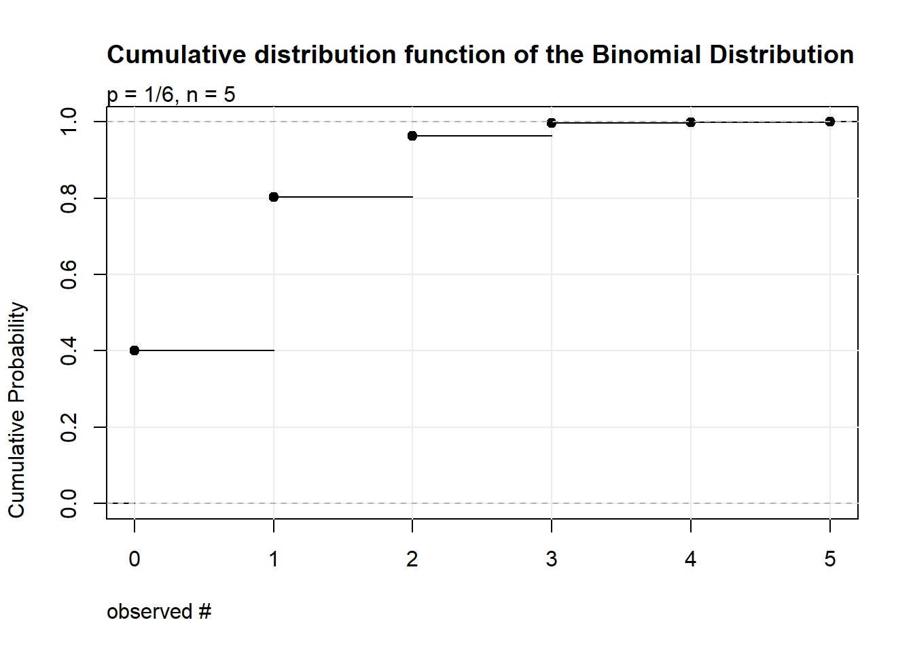
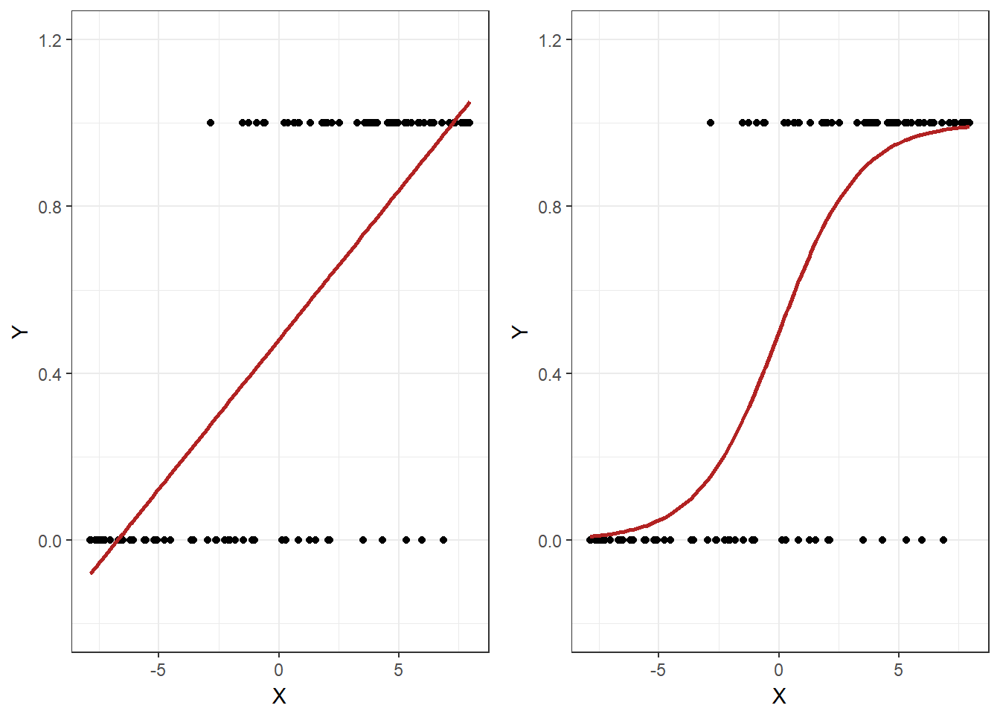
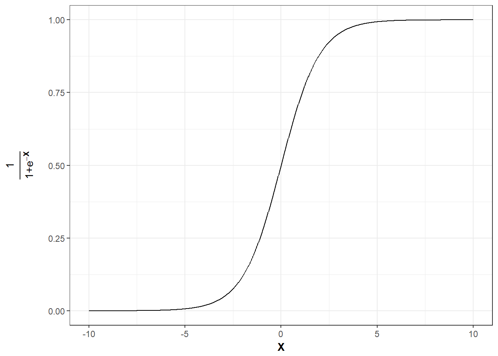

5 Probability Distributions
This chapter is primarily based on:
- Casella, G., & Berger, R. L. (2002). Statistical inference (Vol. 2). Pacific Grove, CA: Duxbury (chapters 2&3).
5.1 Introduction
On the previous page we talked about probability density/mass functions (PDFs/PMFs) and cumulative distribution functions (CDFs). We have also shown some plots of those functions. Here, we want to explore probability distributions that can help us describe the PDFs and CDFs of some random variables. There are a number of well known probability distributions, a few of which will be presented here. Probability distributions can be used to model populations. Let’s consider our coin toss example. We did not actually toss thousands of coins to come up with their probability distribution. We modeled the population of coin tosses using their probability distribution. We say that a random variable \(X\) follows or has some distribution. Distributions have parameters and if we do not specify the parameters we usually speak of a family of distributions. If \(X\) follows the distribution \(D\) and \(a,\ b\) are its parameters, we write:
\[ X \sim D(a, b) \]
We usually want to know what outcome we expect on average given a distribution. We can use the concept of an expected value, denoted \(\mathbb{E}[X]\). In addition, the variance \(\left(Var(X)\right)\) gives a measure of spread around the mean. If the variance is high, values far away from the mean are more likely. Conversely, if variance is low, values far away from the mean are less likely.
Let’s start again with discrete distributions and then move on the continuous ones.
5.2 Discrete Distributions
For discrete distributions the expected value is defined as the sum of all possible values weighted by their respective probability mass. That is, values that are very unlikely get less weight and those that are very likely get more weight. This can be written as
\[ \mathbb{E}[X] = \sum_{x} x f_{X}(x) = \sum_x x P(X = x) \]
The variance is defines as
\[ Var(X) = \mathbb{E}\left[\left(X - \mathbb{E}[X] \right)^2 \right] = \mathbb{E}[X^{2}] - ( \mathbb{E}[X])^{2} \]
This is the expected squared deviation from the expected value. Taking the squared deviation always yields a positive value. In addition, larger deviations are emphasized. This is visualized in the plot below. Some observations: The tosses that do not deviate from the mean and those that only deviate by 1 stay the same when squaring. Those that are \(-1\) become \(+1\) and all others are becoming positive and increase compared to their absolute value.
5.2.1 Binomial Distribution - Coin toss yet again!
It turns out that the random variable “number of heads observed” follows a very common distribution, the binomial distribution. This can be written as follows: \(X\) being the number of heads observed,
\[ X \sim binomial(n, p) \]
where \(n\) are the number of coins and \(p\) is the probability of observing head. Here \(n,\ p\) are the parameters of the binomial distribution.
y <- rbinom(1e5, 5, (1/6))
plot(NULL, xlim=c(0, 5), ylim = c(0,1),
ylab = "Cumulative Probability", xlab = "observed #", xaxt = "n", main="Cumulative distribution function of the Binomial Distribution", adj = 0)
mtext("p = 1/6, n = 5", adj = 0)
axis(1, at = 0:5)
grid(NULL, NULL, lwd = 1, lty = 'solid', col = "gray93", equilogs = FALSE)
lines(ecdf(y))
The binomial distribution can be used whenever there are two or more possible outcomes, one of which is seen as “success”, that is we want to add \(1\) if this outcome occurs and the other(s) as failure in which case nothing is added. The idea is based on the concept of Bernoulli trials. It works analogously for dice if we are interested in the number of dice the show a particular value, say \(1\).
- Throw any number of dice, say \(5\).
- For each die check if it shows \(1\).
- If yes add 1, if no, do not add anything.
- The random variable is the final number and follows a binomial distribution with \(p = \frac{1}{6},\ n = 5\)
library(ggplot2)
y <- data.frame(x=0:5, y=dbinom(0:5, 5, (1/6)))
ggplot(y, aes(x = x, y = y))+
geom_point()+
theme_bw()+
scale_x_continuous(breaks = 0:10, labels=0:10)+
labs(x = "observed #", y = "Probability Mass", title = "Probability mass function of the Binomial distribution", subtitle = "p = 1/6, n = 5")
So, given the parameters \(p,\ n\) of the binomial distribution what are the expected value and the variance?
Let’s start with the coin toss with a fair coin: Now \(p = 0.5,\ n = 1\) and \(X_{0}\) is again the number of heads observed. We sum over all possibilities and weigh by the probability:
\[ 0.5 * 1 + 0.5 * 0 = 0.5 = \mathbb{E}[X_{0}] \]
What happens if we change the probability of observing head to \(0.8\)? Then the random variable \(X_1\) has expectation
\[ 0.8 * 1 + 0.2 * 0 = 0.8 = \mathbb{E}[X_{1}] \]
What happens if we change the number of coins to \(2\) and keep \(p = 0.8\)? Then the random variable \(X_2\) has expectation
\[ \underbrace{0.8 * 1 + 0.2 * 0}_{\text{first coin}} + \underbrace{0.8 * 1 + 0.2 * 0}_{\text{second coin}} = 2 * 0.8 = 1.6 = \mathbb{E}[X_{2}] \]
In general you can just sum up the probability of “success” of all the coins tossed. If \(X\sim binomial(n,\ p)\) then
\[ \mathbb{E}[X] = n * p \]
for any appropriate \(p\) and \(n\).
The variance is the expected squared deviation from the expected value. Let’s look at a single toss of a fair coin again (\(p = 0.5,\ n = 1\)). We already know the expected value is \(\mathbb{E}[X_0] = 0.5\). When we toss the coin we could get heads such that \(x = 1\) with probability \(p = 0.5\) or we could get tails such that \(x = 0\) with probability \(1-p = 0.5\). In either case we deviate from the expected value by \(0.5\). Now we use the definition of the expectation as the weighted sum and the fact that we are interested in the squared deviation
\[ Var(X_0) = 0.5 * (0.5^2) + 0.5 * (0.5^2) = 2 * 0.5 * (0.5^2) = 0.5 - 0.5^2 = 0.25 \]
What happens if we change the probability of observing heads to \(0.8\)? Now the expected value is \(\mathbb{E}[X_{1}] = 0.8\) and we deviate from it by \(0.2\) if we get heads and by \(0.8\) if we get tails. We get
\[ Var(X_1) = \underbrace{0.8}_{p(h)} * \underbrace{(0.2^2)}_{deviation} + 0.2 * (0.8^2) = 0.8 - 0.8^2 = 0.16 \]
How did we get to the second to last equality?
Notice that the sum follows this pattern for \(n = 1\) and any appropriate \(p\): \[ Var(X_i) = p * (1-p)^2 + (1-p) * p^2 \]
If we expand the squared term and simplify:
\[\begin{align*} Var(X_i) &= p * (1 - 2*p + p^2) + p^2 - p^3 \\ &= p - 2*p^2 + p^3 + p^2 - p^3 \\ &= p - p^2 \end{align*}\]What happens if we change the number of coins to \(2\) and keep \(p=0.8\)?
\[ Var(X_2) = 0.8 * 0.2^2 + 0.2 * 0.8^2 + 0.8 * 0.2^2 + 0.2 * 0.8^2 = 2 * (0.8 * 0.2^2 + 0.2 * 0.8^2) = 2 * (0.8 - 0.8^2) = 0.32 \]
Since increasing \(n\) further simply adds more of the same terms we can easily adapt the general formula above for any appropriate \(n\) and \(p\):
\[ Var(X_i) = n * (p-p^2) \]
Equivalently this formula can be written as:
\[ n * (p - p^2) = np - np^2 = np * (1-p) = Var(X_i) \]
You can directly get values from the binomial distribution in R
# Parameters
p <- 0.8
n <- 2
# Random sample with 100 observations
head(rbinom(100, n, p))## [1] 2 1 2 1 1 1# Probability mass at point 2
dbinom(2, n, p)## [1] 0.64# Cumulative probability at point 1
pbinom(1, n, p)## [1] 0.36# Quantile function at percentiles 0.36 and 0.37
qbinom(0.36, n, p)## [1] 1qbinom(0.37, n, p)## [1] 2See Quantile Function.
5.2.2 Discrete Uniform Distribution
The discrete uniform distribution assigns the same probability to all possible values.
dat <- data.frame(x = 1:10, y = rep( ( 1 / 10), time = 10))
ggplot(dat, aes(x = x, y = y)) +
geom_linerange(aes(ymin = 0, ymax = y)) +
geom_point() +
geom_line(aes(x = 1:10, y = rep(0, times = 10))) +
theme_bw() +
scale_x_continuous(breaks = c(1:10)) +
lims(y = c(0, 0.15)) +
labs(y = "Probability Mass", x = "Event",
title = "PMF of a Discrete Uniform Distribution")
cdfdat <- data.frame(y = cumsum(rep(0.1, times = 10)), x = 1:10)
ggplot(cdfdat, aes(x = x, y = y)) +
geom_segment(aes(x = x, xend = (x + 1), yend = y)) +
geom_point() +
theme_bw() +
labs(y = "Cumulative Probability", x = "Event",
title = "CDF of a Discrete Uniform distribution") +
scale_x_continuous(breaks = c(0:10))
To calculate the expected value of this distribution let’s first look at how to easily sum the numbers from \(1\) to some arbitrary \(N\). That is \(1 + 2 + 3 + \dots + N =\) ?. Let \(S = 1 + 2 + 3 + \dots + N = \sum_{i = 1}^N i\). Then
\[\begin{align*} S &= 1 + 2 + 3 + \dots + (N-2) + (N-1) + N \\ \text{This can be rearranged to:} \\ S &= N + (N-1) + (N-2) + \dots + 3 + 2 + 1 \\ \text{Summing the two yields:} \\ 2 * S &= (1 + N) + (2 + N - 1) + (3 + N - 2) + \dots + (N -2 + 3) + (N - 1 + 2) + (N + 1)\\ &= (1 + N) + (1+N) + (1+N) + \dots + (1+N) + (1+N) + (1+N) \\ &= N * (1 + N) = 2 * S \\ \text{It follows that:}\\ S&= \frac{N * (1 + N)}{2} \end{align*}\]The weight given to each possible outcome must be equal and is thus \(p = \frac{1}{N}\). Recall that the expected value is the weighted sum of all possible outcomes. Thus if \(X \sim discrete\ uniform(N)\) \[ \mathbb{E}[X] = \sum_{i = 1}^N p * i = \sum_{i = 1}^N \frac{1}{N}* i = \frac{1}{N} \sum_{i = 1}^N i = \frac{1}{N} * S = \frac{1}{N} * \frac{N * (1 + N)}{2} = \frac{(1 + N)}{N} \]